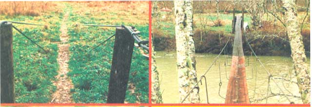
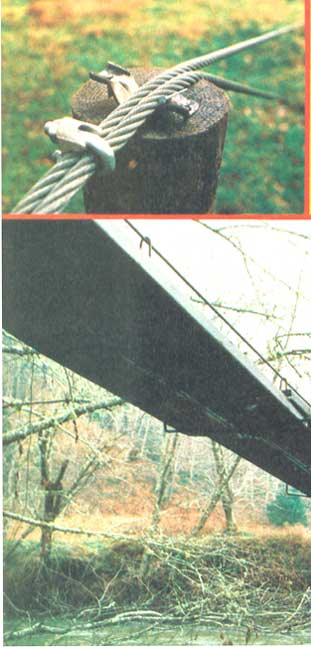
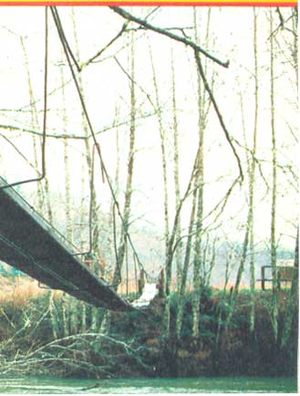

James Dameron's dream homesite was on the other side of a river. So Jim sat himself down and
learned how to (and how not to!) construct a footbridge.
Don't get me wrong. My wife Sammie and I never meant to build our bridge two times ... once would have been just tine, thank you!
Only we goofed ... and in a big way. I'll tell you about it so you can "go to school on our mistake". That way-if you ever construct your way across a river- your story won't be like ours!
We knew we were a little "green" when we moved from arid southern California to Washington's Olympic Peninsula (where folks say the wells'd go dry if a rainy season totaled less than 70 inches). So, even though the Satsop River that ran through our five acres looked friendly enough, my wife and I decided to be cautious and build our country home on the stream's high side. Unfortunately, the only road (and, of course, our "temporary" trailer) was on the low bank ... that's how we found ourselves in the footbridge business.
As I've said, we only intended to build our "crossin' " once. So we studied materials, researched permits, and examined local bridges for three solid months. This preparation convinced us that we should pattern our structure after one we'd seen in a nearby park. The planks of that span rested on big U-shaped hangers which, in turn, hooked onto two main overhead cables. These steel support lines were strung over upright poles on both sides of the river and then bound fast to massive maples.
Of course, these days it seems you need government permission before you do anything... even in our isolated valley. The Fish and Game folks gave us one of their "hydraulic permits" right away. But some paper-pushing procrastinators at the EPA made us wait two months for a "substantial development permit" ... only to tell us our project was so inexpensive that we didn't need their permission in the first place!
Once the red tape was out of the way, though, we were ready to build. I'd picked up a pile of discarded 3/4" galvanized steel cable at work, but the trees on our river's banks were too small to hold such heavy lines. So, we decided to anchor our bridge supports to buried log "deadmen".
We started on the low side, digging a trench well back from-but parallel to-the river. Then, we dropped a big cedar log (with two short lengths of cable clamped around it) into the ditch. To finish that job, we dug little slots in the side of the trench facing the river... so the steel lines could leave the ground at about a 45° angle. (Otherwise, the tense cables would eventually cut through the soil ... and the whole bridge would sag.)
Next, we covered the wooden deadman, leaving only the two loose wire ends sticking up out of the earth. These were clamped to large turnbuckles ... which were my own brainstorm for cinching up the cables once they were strung. The tighteners cost us $10 apiece...and these were our biggest equipment expense.
Then, to assure that our lines would run high, we set two standing six-foot creo-soted posts-four feet apart-next to the river bank and attached some scavenged steel brackets on top of these to act as "riders".
And then it was wading time. We clamped the main cables to the turn-buckles, slung those 200-foot lines over the posts, and dragged them across the shallow, summer-level river.
We constructed the same post and deadman system on the other, higher side of the river... with two main differences: [1] We made the poles shorter (to keep the bridge itself level), and [2] since we didn't have any small cable pieces left, we wrapped the main lines around the high-bank deadman before we buried the log.
After fording back to the low side, I loosened the clamps near the turnbuckles, pulled the bridge's "suspenders" taut with a hand winch, and then refastened the clamps. (I was deliberately saving the "take-up" of the turnbuckles in case the bridge sagged when we put on the planks.)
With the cables strung, our next step was to build "drooping" steel-rod hangers to support the foot boards. We discovered lots of sturdy-and free -rod hooped around the outside of our neighbors' abandoned silos, and had a blacksmith bend the steel into 3' X 3' X 3' U-shaped pieces with sturdy hooked ends (which would later hang over our main cables).
Then-when all we needed were some planks-an alert friend salvaged some perfect creosoted 2" X 12" X 16' river-spanners. We figured to overlap the boards one foot at their ends (making them-in effect-15 feet long), so we spaced our hangers at 7-1/2-foot intervals along the cables. That spacing would, we figured, give us a "U-supporter" at the middle of each board as well as one under every overlapped "junction".
We drilled holes in the planks and used eyebolts to fasten the beams to the hangers. Then I cinched up a little cable slack with the turnbuckles and-simple as that-our bridge was finished! Best of all-because we had scrounged up all the lines, rods, and lumber-our beautiful, hanging river-crosser only cost us $75!
And suddenly the rainy season arrived. One afternoon we returned from town and found a torrent raging toward our just-completed bridge. I couldn't believe it, but the river had actually risen three feet in that hour!
I grabbed my tools, raced out onto the bouncing structure, and frantically unbolted the planks from the hangers. Then-while floating branches swept by just underneath us-Sammie and I hauled the valuable creosote-impregnated boards to safety.
After we'd removed all 200 feet of lumber, the lightened cables rose above the swollen Satsop. And, soaked but relieved, we went into our trailer to dry off and have something to eat.
I was sitting down to my first bite of vittles when I heard a loud clang. As I reached the door I saw a huge tree rush downstream and bash into the cables.
The impact washed away one of our "silo" hangers ... and four other board-holders were already missing.
In an effort to salvage what I could, I crawled out onto the lines and-dodging sailing limbs-grabbed as many hangers as possible. But, even when most of the U-rods were secure, there wasn't a thing we could do to save the cables.
As night came on, the river inched over the lower bank, spread into the field, and-finally-reached our bridge lines. I knew the steel cords wouldn't break-even the heaviest tree couldn't snap those cables-but the ground over the low-side deadman was beginning to bulge upward. We went inside, feeling helpless, and listened the rest of the night as the river played our bridge like a cello.
In the morning, the cables (and our spirits) were down. The two-foot-diameter deadman had been pulled clear out of its trench, thrust downriver, and driven- cables and all-against the high bank. Of course the lines couldn't escape (they were still anchored by the other deadman) but they would have to lie in the water until the river went down enough for us to try pulling them out. So, for four months, we stared across the river at our cherished-but unreachable-building site ... and replanned our bridge.
When the river dropped we erected two new posts to string our cables on ... but this time they were 15 footers, with four feet firmly concreted in the ground and eleven feet above. The new poles would hold our bridge high oft the water. I built a 6' X 6' raised deck with steps in front of the posts, and replaced the washed-away log deadman with three yards of concrete poured in a new, deeper trench (setting the turnbuckled cable lengths in the mortar mix before it could harden).
I also put in new, tall posts on the far side of the river. Then-since I had no way to take sand and gravel over to mix concrete-I buried an extra backup deadman, which I clamped to the old one with short steel cables.
Sammie and I spent some frozen hours tugging those heavy lines back through the icy river, tightening them up, and re-erecting our hangers and planks. But it's all done now ... and this time it's well done, too.
So, learn from us. If you're planning to do some bridge building, read all you can find, talk to knowledgeable locals, and don't let high water bring you-and your project-down.
As for us, we're busy these days toting lumber over our fine new bridge ... and trying to figure out how to build a house...once!
|
 PHOTOS BY STEVE BRADLEY ABOVE, LEFT: the cables on James and Sammie Damer-on's Satsop River bridge are anchored in the ground by cedar logs buried four feet deep (the lines on the other side of the river are set in concrete). Treated posts hold the cables?and the bridge?high... well above the unpredictable torrent that ruined the Dameron's first fiver spanner. ABOVE: U-shaped steel rod hangers?salvaged for free from old silos and bent to shape by a neighborhood black-smith?hang from the bridge's ""suspenders"" and under-prop the middle and ends of each 16-foot creosoted board. Jim plans to close in the sides with wire fencing... after he and his wife finish their do-it-yourself country home! |
 LEFT:The cable lie on meal brackets to keep them from cutting down into the posts or rolling to either side. The clamps have to be the proper size?in Jim's case, 3/4""?to properly cradle the steel lines. |
 BOTTOM:The river's low now, but even during floodtime the Dameron water-spanner stays high... and dry. This angled view shows the short posts on the high side of the river. To make the bridge level, the posts on the low side had to be a good bit taller. In fact, those ""lower bank"" poles stand nearly 11 feet off the ground |